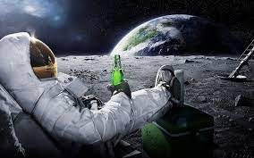

солнечная система
Космос, бескрайний и загадочный, всегда привлекал внимание человечества. Наблюдая за звездами, планетами и
галактиками, мы задаем себе вопросы о происхождении Вселенной, о нашем месте в этом огромном космическом океане.
Но какие именно аспекты космоса оказывают влияние на нашу повседневную жизнь?
кто первый полетел в космос
12 апреля 1961 года – дата в истории, о которой не надо напоминать: все знают, что именно в этот день состоялся первый в мире полёт человека в космос. 12 апреля 1961 года в 9 час. 07 мин. по московскому времени в нескольких десятках километров севернее посёлка Тюратам в Казахстане с космодрома Байконур состоялся запуск ракеты-носителя «Восток». Она вывела на околоземную орбиту советский космический корабль «Восток» с человеком на борту. Это был Юрий Алексеевич Гагарин. Продолжительность полёта составила 1 час 48 мин. Во время нахождения на орбите Гагарин поддерживал радиосвязь с Землей, вёл наблюдения в иллюминаторы, контролировал работу систем корабля. Луна
С развитием науки человечество узнало много нового о Луне. Мы знаем, что Луна является естественным спутником
Земли, что ее поверхность покрыта кратерами от метеоритов, что на ней нет атмосферы и воды. Луна влияет на приливы
и отливы на Земле, создавая удивительные природные явления.
Кто первый полетел на луну
21 июля 1969 года бывший летчик-истребитель Эдвин «Базз» Олдрин вышел из спускаемого аппарата и стал вторым в
истории человеком, побывавшим на Луне. Примерно за 20 минут до него первым стал командир экипажа Нил Армстронг.
земля
Земля существует уже более 4,5 миллиардов лет. За это время на ней произошло множество изменений: от формирования
первых материков до появления жизни разнообразных форм. Изучение истории Земли помогает нам лучше понять ее
сегодняшний облик и предсказать будущее.
Земля - это наш дом, единственное место во Вселенной, где мы знаем, что можем жить. Изучение ее истории,
структуры и особенностей помогает нам лучше понять самих себя и сохранить эту удивительную планету для будущих
поколений. Давайте беречь и любить нашу Землю, ведь она так уникальна и
структура земли
Земля – это не просто кусок суши, плавающий в космосе. Наша планета имеет сложную структуру, состоящую из
внутреннего ядра, внешнего ядра, мантии и коры. Эти слои играют важную роль в формировании геологических
процессов и создании уникальной среды для жизни.
биоразнообразие Земли
Земля – это место, где обитает огромное количество видов живых организмов. От микроскопических бактерий до
гигантских китов – биоразнообразие нашей планеты поражает своим многообразием. Каждый уголок Земли скрывает в
себе удивительные формы жизни, которые адаптировались к самым экстремальным условиям.

солнце
Луна продолжает волновать и вдохновлять нас. Ее исследование не только позволяет расширить наше понимание
космических явлений, но и открывает путь к новым открытиям и возможностям для человечества. Будущие миссии и
исследования на Луне предоставят нам новые данные и знания, которые помогут сформировать более полное
представление о нашей вселенной.

{kind=link}
Что такое Солнечная Система?
Солнечная Система - это система, включающая в себя Солнце и все объекты, движущиеся вокруг него под воздействием
его гравитационного поля. В нее входят планеты, их спутники, карликовые планеты, астероиды, кометы и метеороиды.
Главный герой - Солнце
Солнце - центральное тело Солнечной Системы, вокруг которого вращаются все остальные объекты. Оно составляет
около 99,86% от общей массы Солнечной Системы и является источником энергии для жизни на Земле.
Планеты Солнечной Системы
Солнечная Система состоит из восьми планет: Меркурий, Венера, Земля, Марс, Юпитер, Сатурн, Уран и Нептун. Каждая
планета имеет свои уникальные особенности и характеристики, делая их удивительными объектами изучения.